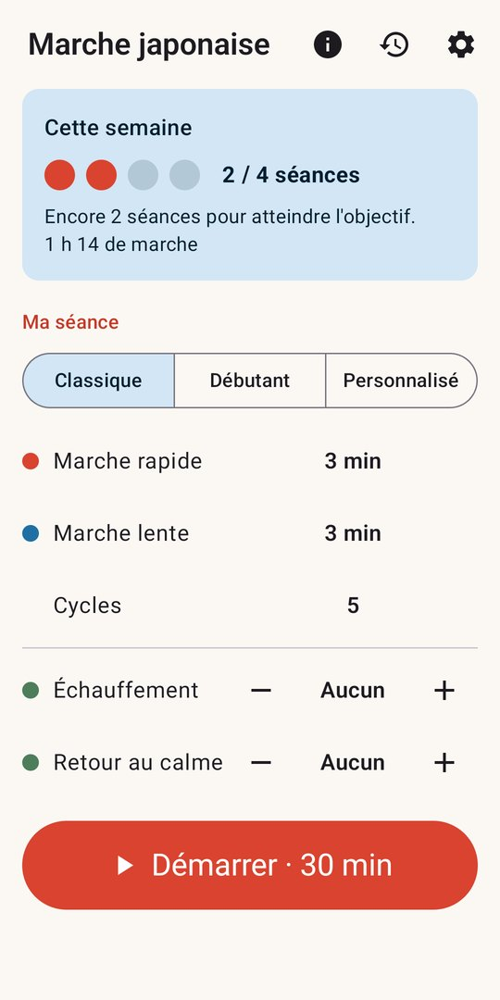
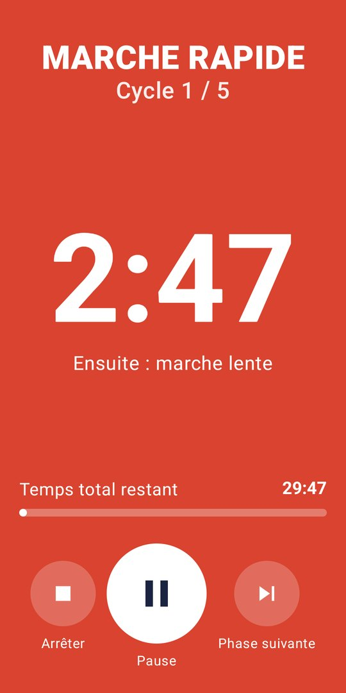
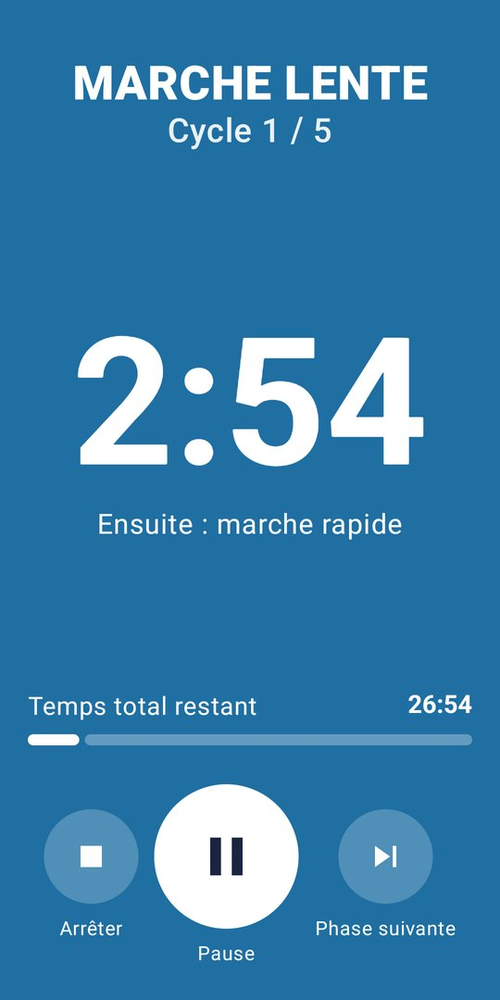
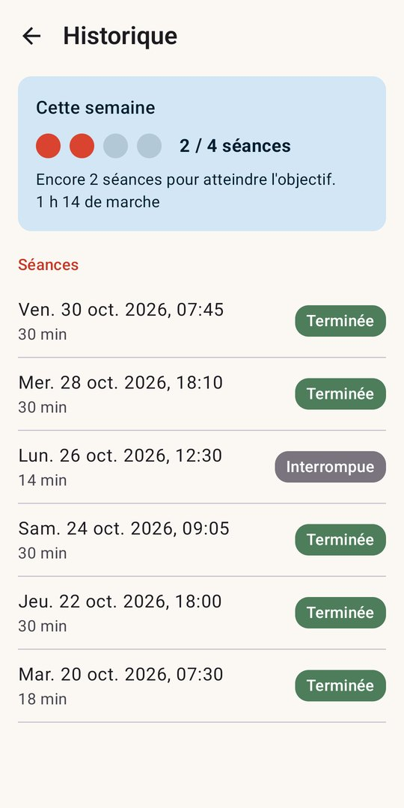
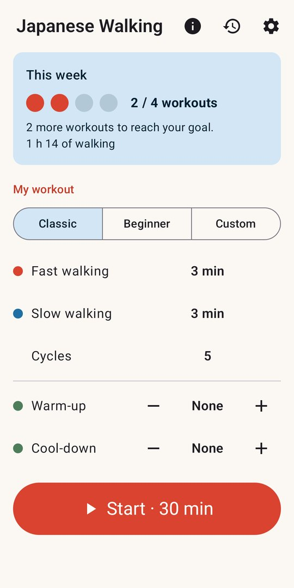
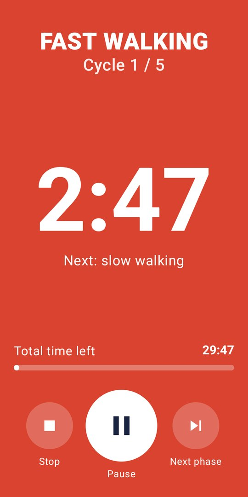
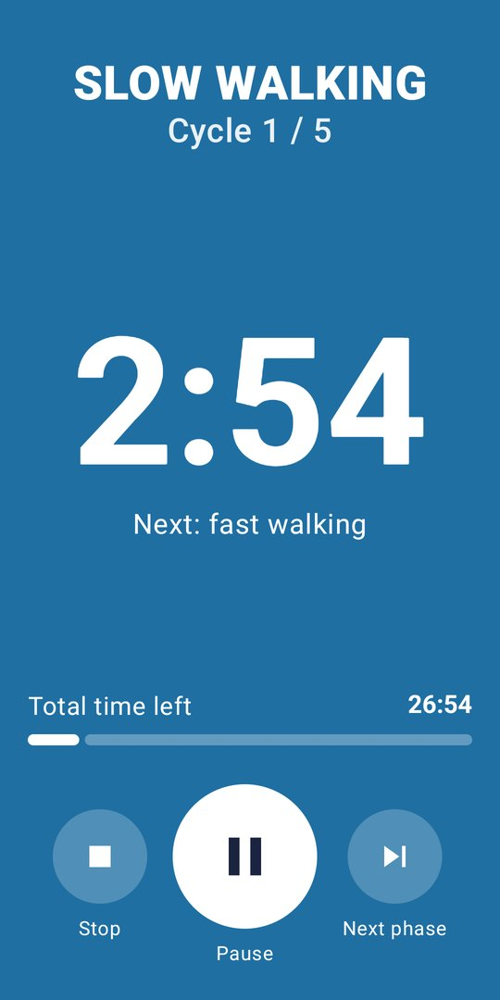
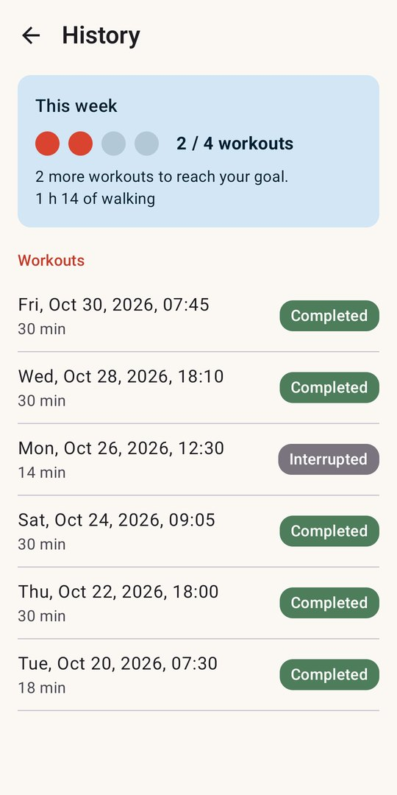

Aperçu
Preview








La marche japonaise, c'est quoi ?
What is Japanese walking?
La marche japonaise, ou marche fractionnée (Interval Walking Training), a été mise au point au Japon, à l'université de Shinshu. Le principe est simple : alterner 3 minutes de marche rapide, à environ 70 % de votre effort maximal, et 3 minutes de marche lente pour récupérer.
On enchaîne en général 5 cycles, soit 30 minutes, environ 4 fois par semaine. La seule difficulté est de surveiller l'heure : c'est précisément ce que fait l'application à votre place.
Japanese walking, or Interval Walking Training (IWT), was developed in Japan at Shinshu University. The idea is simple: alternate 3 minutes of fast walking, at about 70% of your maximum effort, with 3 minutes of slow walking to recover.
The usual routine is 5 cycles, 30 minutes, about 4 times a week. The only hard part is keeping track of time: that is exactly what the app does for you.
Ce que fait l'application
What the app does
Préréglages Classique (3/3 × 5) et Débutant (3/3 × 3), ou séance personnalisée mémorisée. Échauffement et retour au calme facultatifs.
Classic (3/3 × 5) and Beginner (3/3 × 3) presets, or a saved custom workout. Optional warm-up and cool-down.
La séance continue écran éteint, sans dériver d'une seconde. La notification affiche la phase et le temps restant, avec pause et arrêt.
The workout keeps running with the screen off, without drifting by a second. The notification shows the phase and time left, with pause and stop.
« Marche rapide », « Marche lente », « Encore une minute » ; vibrations différentes pour chaque phase. Chaque signal s'active séparément.
“Fast walking”, “Slow walking”, “One minute left”; a different vibration for each phase. Each signal can be turned on or off.
Musique ou podcast baisse le temps de l'annonce, puis reprend son volume : la lecture n'est jamais coupée.
Your music or podcast lowers its volume during an announcement, then comes back: playback is never interrupted.
Très grand compte à rebours, écran rouge pour la marche rapide, bleu pour la marche lente, cycle en cours et temps total restant.
Huge countdown, red screen for fast walking, blue for slow walking, current cycle and total time left.
Chaque séance est notée, terminée ou interrompue, avec votre progression vers l'objectif de 4 séances par semaine.
Every workout is logged, completed or interrupted, with your progress towards the goal of 4 workouts a week.
Gratuit, sans compte et sans abonnement. Votre historique reste sur votre téléphone. Une bannière publicitaire discrète finance l'application, jamais pendant une séance.
Free, no account and no subscription. Your history stays on your phone. A discreet banner ad funds the app, never during a workout.
L'application est un minuteur et ne donne aucun avis médical. En cas de doute sur votre santé, demandez l'avis d'un médecin avant de commencer.
The app is a timer and gives no medical advice. If you have any doubt about your health, ask a doctor before starting.